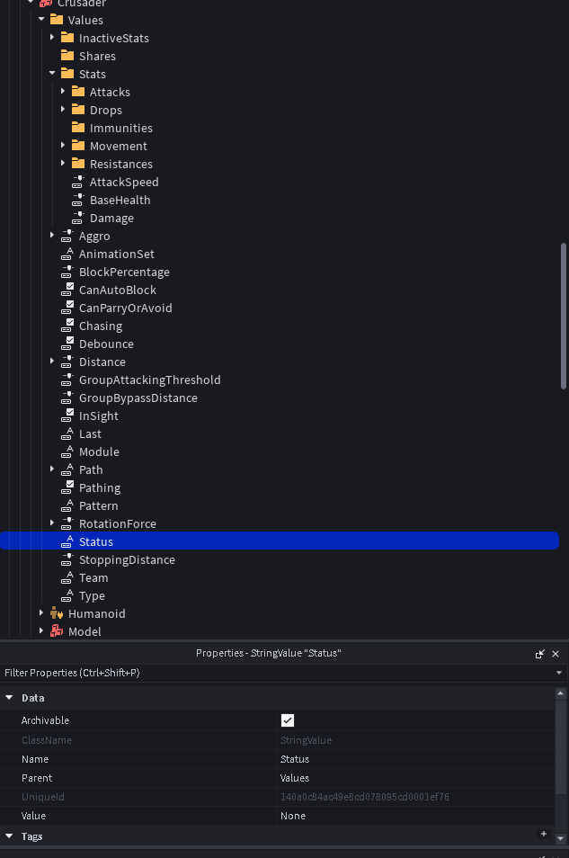
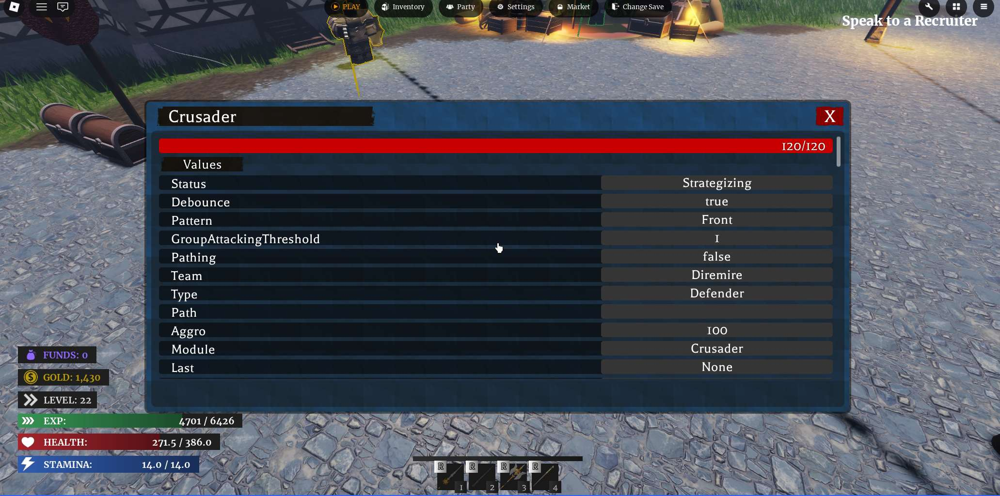
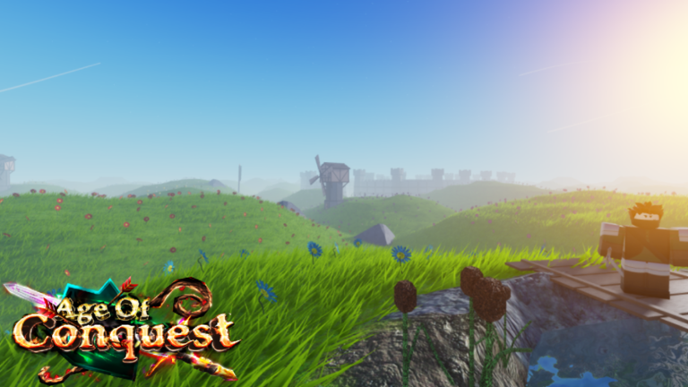
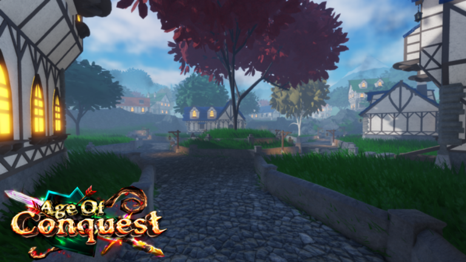

Project Overview
Age of Conquest is an MMORPG and action-adventure game with three distinct game modes and a large variety of content, including dozens of enemies, weapons and armor. Each game mode can be played solo or in multiplayer. The game reached a peak of 140 concurrent players and received over 138,000 visits.
Launch Trailer
My Role
As a designer and programmer on the project, I conceptualized and implemented the enemy AI, combat system and the three different game modes. I also programmed the functionality of all game interfaces (inventory, match selection, etc.). The combat animations were also created by myself.

Design & Systems
Combat
Age of Conquest's combat system is based on a risk/reward approach inspired by games such as Sekiro: Shadows Die Twice.
The player can dodge, block or parry enemy attacks while managing energy and posture.
 To balance repeated dodges, each dodge performed in succession consumes more and more energy. Additionally, the parry window becomes smaller if the ability is used multiple times within a short period.
This system forces players to form strategies and learn enemy attack patterns.
To balance repeated dodges, each dodge performed in succession consumes more and more energy. Additionally, the parry window becomes smaller if the ability is used multiple times within a short period.
This system forces players to form strategies and learn enemy attack patterns.
Each weapon category offers its own advantages and disadvantages in order to encourage different playstyles and dynamic combat.
AI

The game's AI is highly modular in order to serve each of the three game modes. To begin with, each enemy can have different movement behaviors: defensive, offensive or wandering.
The first sees the enemy defend a specific position, the second move toward a specific point on the map, and the third wander around a limited area.
With this same system, enemies can take on many different roles.
In combat, enemies use a shared State Machine across all game entities in order to read the state and distance of their opponents (player or AI) and form a combat strategy.
This system also allows the modification of a large amount of parameters:
speed, aggressiveness, attack range, status effects, field of view, resistance, group behavior, target type, etc.
These parameters are used extensively to create unique gameplay scenarios in each dungeon of the game.

Excerpt of the behavioral and combat parameters of the enemy "Crusader"
Debug tools used to visualize AI statistics and behaviors in real timeTo avoid unfair combat situations, enemies also follow coordination rules limiting, for example, the number of enemies able to attack at the same time.
Game Modes
Campaign
PvE-oriented mode with distinct objectives and events.
At the end of each mission, player rewards are determined by a scoring system taking into account:
time, enemies defeated and player deaths. This system encourages replayability and strategy optimization.
Enemy spawns in this mode as well as the next one are partially random and dependent on the number of players present in the match in order to reinforce replayability.

Survival
Survival mode pits players against increasingly difficult waves of enemies.
A dynamic system was created to modify waves according to: difficulty level, player count and match pacing.
Waves are separated into categories and each can appear depending on the current difficulty of the match. Every 5 waves, the system guarantees a Boss wave.
Team Battle
Team Battle mode mixes PvP and PvE in matches where each team must defend its base and destroy the enemy's.
To add a strategic element and deepen defensive gameplay, players can build or upgrade structures (towers, barracks, defensive walls) in order to better protect their base.
In order to prevent progression gaps from making fights unfair, player statistics are adjusted according to their opponents, allowing newer players to fight higher level players on equal footing.
Game Footage

